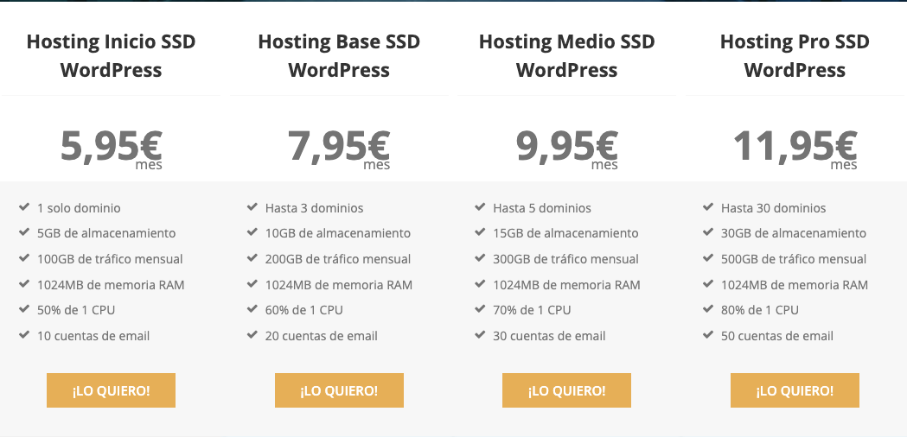
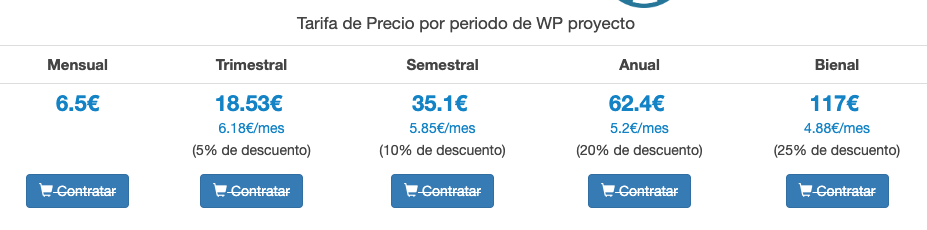
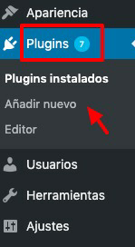
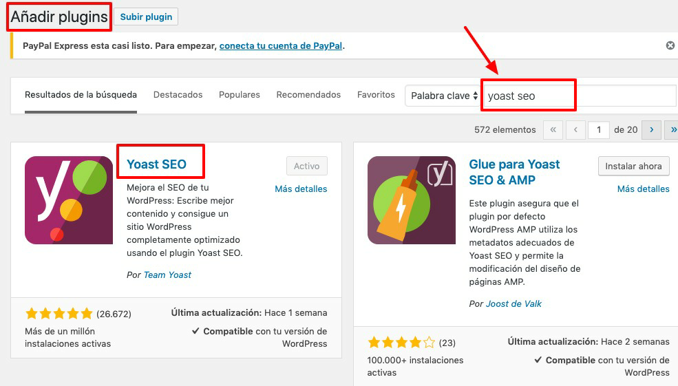
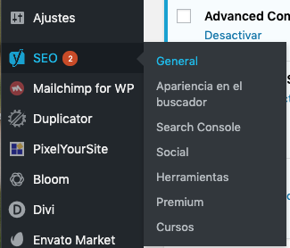
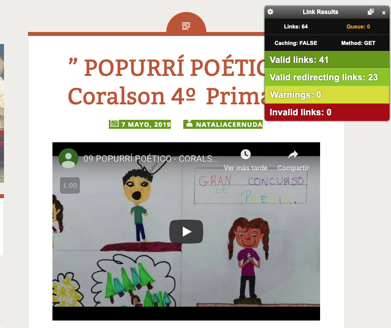
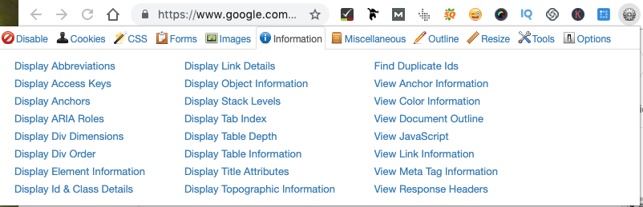
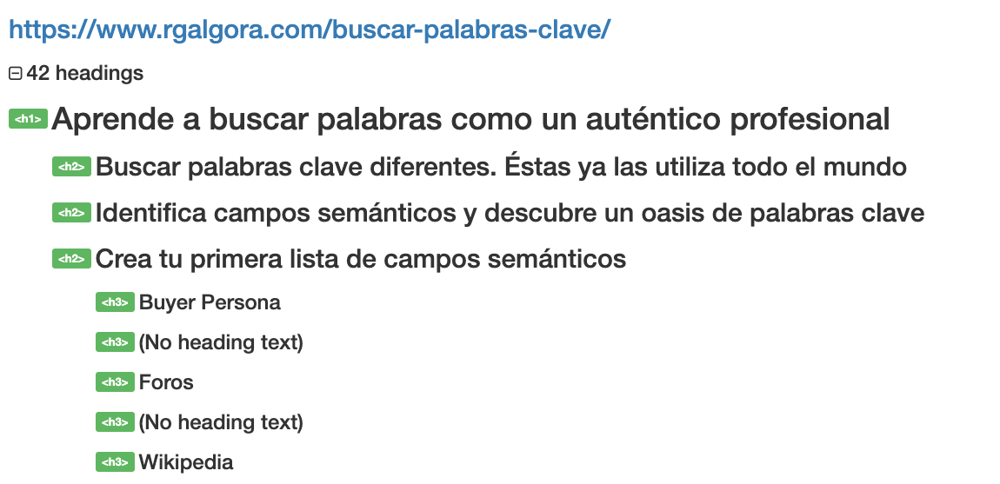
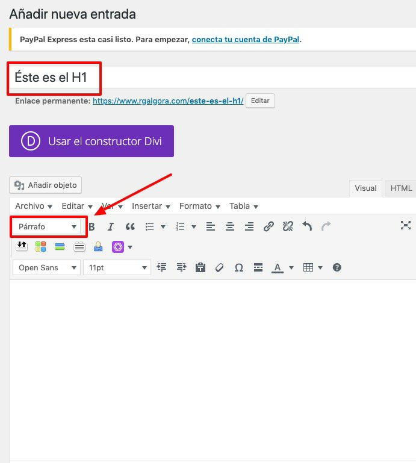
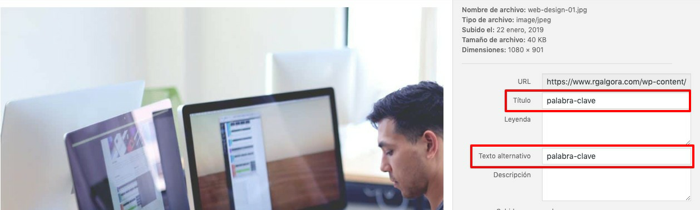

SEO On Page: preparando el terreno
Doy por sentado que tienes una web o un blog o que al menos tienes intención de crear uno.
Quizá has elegido un dominio gratuito en wordpress, blogspot, wix… la parte positiva es que de momento no has invertido ni un céntimo de tu bolsillo. La parte negativa es que realmente no es tuyo, sino de la plataforma en cuestión y si algún día quieren cerrarlo, utilizarlo en su beneficio u otras causas, están en su pleno derecho.
Si vas a invertir tu tiempo y conocimiento en la creación de un blog, te recomendaría una inversión mínima de menos de 100€ al año para tener un dominio propio y hosting (servidor) en wordpress. La plantilla puedes quedarte con una gratuita de las muchas que ofrece wordpress.org. Entonces sí tendrás un blog propio.
Dominio:
El nombre que quieres poner al blog. Por ejemplo: eleternoestudiante.com
Elige siempre que puedas un dominio .com o .es
Hosting:
Si contratas el hosting con Raiola te regalan un dominio gratis. Con el Hosting inicio SSD Wordpress tienes más que suficiente para comenzar.

Otro buen hosting que recomiendo es el de ProfesionalHosting, que también regalan el dominio.

Enlaces de afiliado
Soy afiliada, aunque nunca los recomendaría si no estuviera contenta con su rendimiento. Son los hosting que utilizo para mis páginas personales y con mis clientes.
Raiola: https://gestiondecuenta.eu/aff.php?aff=2805 si vas a contratar hosting con Raiola, por favor, accede a su web a través de mi enlace.
ProfesionalHosting: si te has decidido por professional hosting, por favor indica que vienes referido por mí: Rocío García Algora.
Muchas gracias de antemano.
Plantillas
Lo importante es que sea intuitiva y muy limpia de código, para que la velocidad de carga no sea pesada.
Hay muchísimas plantillas gratuitas orientadas a revistas, blogs. Una de las más destacadas y utilizadas por su facilidad y ligereza es Twenty seventeen
El hosting que contrates, tanto Raiola como ProfesionalHosting, te ayudarán a instalar wordpress y la plantilla para que tú no tengas que ocuparte de esta parte más técnica. En el caso de que ya tengas blog con contenidos te ayudarán a migrarlo si te has decidido por dar una limpieza de cara a tu blog.
Tarea: si no tienes blog, piensa sobre el nombre del dominio y compara hostings. Elige el que más te llame y a por ello. Si ya tienes blog, reflexiona si quieres meterte en un cambio o si te quedas como estás, optimizándolo.
Plugin SEO Yoast
Y vuelvo al SEO, que si no me desvío del camino…
En este punto voy a listar una serie de aspectos básicos que hay que trabajar de tu on page para que tu blog esté óptimo de cara a los buscadores.
Comenzamos con tarea:
Tarea: Instalar el plugin SEO Yoast: https://es.wordpress.org/plugins/wordpress-seo/
Se trata de un plugin muy completo que te va a ayudar con el SEO de tu blog.
¿Cómo instalo el plugin?
Entras en el escritorio wordpress de tu blog y en la columna de la izquierda buscas “plugins”, colocas el ratón sobre él y se despliega una ventana “añadir nuevo”

Una vez que das a añadir nuevo, se abre una ventana con un buscador. Escribes en el buscador “yoast seo” y al botón “instalar ahora”

Una vez que le das a instalar, aparecerá la palabra “activo”.
Ahora te aparecerá en la columna de la izquierda, casi siempre debajo de “ajustes”.
Hay muchísimos tutoriales sobre cómo configurar Yoast SEO, tanto en artículo como en vídeo.
Os deja enlace a un vídeo de Alex Serrano que creo que lo explica muy bien paso a paso.
Una vez que lo tengas instalado, te van a aparecer las siguientes opciones:

En el vídeo de Alex Serrano explica paso a paso cómo configurarlo según las necesidades de tu blog.
Con SEO Yoast bien configurado tendrás:
- un sitemap.xml optimizado
- un robots.txt
- podrás vincularlo a tus redes sociales
- podrás conectarlo con Google Search Console (herramienta gratuita de Google para analizar datos de tu blog)
- y mucho más…
Sobre todo, cómo vamos a ver en el punto de “sé un estratega y posiciona con tus contenido, te va a guiar en la redacción y optimización de tu artículo.
Tarea: Sigue paso a paso la configuración de SEO Yoast.
¡Ojo! esto para blogs que parten de cero. Si tu blog ya tiene recorrido, habría que hacer una auditoría breve para que no aparecieran errores 404.
En el caso de que ya tengas numerosos artículos escritos, quédate solo con la parte de seo yoast que explico en la parte de contenidos.
Errores 404
Son los errores que aparecen cuando los enlaces están rotos o la página no existe.
Imagina que publicas un post, pero pasado un tiempo lo eliminas. Esa url estaba indexada, es decir, en los resultados de google. Cuando google se pasa a buscar esa página, no la encuentra porque la has eliminado, y entonces devuelve un 404.
Es necesario que revises tu blog en busca de errores 404, ya que a google no les gusta demasiado.
Algunas herramientas gratuitas para revisar los errores 404:
- https://www.brokenlinkcheck.com/
- extensión para instalar broken link checker https://chrome.google.com/webstore/detail/broken-link-checker/nibppfobembgfmejpjaaeocbogeonhch
- extensión para instalar: check my links https://chrome.google.com/webstore/detail/check-my-links/ojkcdipcgfaekbeaelaapakgnjflfglf (mi favorita)

Tarea: instalar la extensión que prefiráis o utilizar la herramienta y analizar varios artículos de vuestro blog para comprobar que no hay errores 404.
Encabezados
Cada artículo debe tener obligatoriamente un H1 y sería recomendable dividir toda la información mediante H2 y h3.
Con la extensión gratuita webdeveloper (chrome, firefox, etc), una vez que la tienes instalada, abres cualquier artículo, clicas sobre la rueda dentada y se abre una ventana, en la tercera columna eliges “view document outline”

y ves la arquitectura de ese artículo:

Cuando escribes un artículo en wordpress, la primera caja de texto es para el H1 y en el desplegable de “párrafo” se puede seleccionar “título 2”, “título 3” y sucesivos.

Tarea: instalar la extensión webdeveloper, elegir un artículo y clicando sobre la rueda dentada -> “view document online” comprobar que tiene H1 y una arquitectura adecuada de encabezados.
Optimización de las imágenes
Las imágenes son algunos de los elementos que dan más quebraderos de cabeza en SEO. Lo normal es que se suban sin optimizar, pero a partir de ahora, eso se ha acabado.
Pasos para optimizar una imagen:
- Comenzamos con la reducción del peso de la imagen. Existen varias herramientas para ello, como photoshop y algunas online como tinypng.com y compressor.io
- Nombra el archivo utilizando la palabra clave. Nada de “45637.jpg”, si no “arquitectura-renacentista.jpg”, por ejemplo.
- Se sube a wordpress a a través de medios -> añadir nuevo (columna izquierda, arriba)
- Por regla general, una foto de 1024 px es suficiente para web.
- Se indica título y texto alternativo, utilizando palabra clave.

Ojo, no se debe repetir título ni alt, por lo que si tienes varias imágenes en tu post de “arquitectura renacentista”, puedes añadir por ejemplo “arquitectura renacentista estilo plateresco”, “arquitectura renacentista salamanca”, etc.
En el caso de que ya tengas muchas imágenes subidas a tu blog, para reducir el peso de las mismas te recomiendo que instales el plugin gratuito Smush Imagen Compression and Optimization.
Podrás optimizar por lotes todas las imágenes que ya están subidas.
Tarea: instala el plugin y reduce el peso de las imágenes o reduce su peso si es la primera vez que las subes. Revisa y rellena los campos de título y texto alternativo.
Titles y metadescriptions (títulos y descripciones)
Esta parte pertenece al on page pero vamos a verla con detenimiento en el punto de generar contenido.
Velocidad de carga
Existen varias herramientas que nos indican la velocidad de nuestro blog. Las tres más importantes son:
- page speed insights (de google)
- gtmetrix: elige tu navegador y país UK, que es lo más cercano.
- pingdoom tools: elige Londres también.
En numerosas ocasiones solo con mejorar la optimización de las imágenes, la velocidad mejora muchísimo. En otras cosas será necesario tocar aspectos más técnicos.
Tarea: revisa tu blog con estas tres herramientas y comprueba si optimizando las imágenes puedes mejorar la velocidad. En ocasiones no solo es el peso, sino también la escala de la fotografía.
Como ves, el mundo del SEO puede ser inabarcable. Para un blog docente considero que implementado y configurando correctamente SEO Yoast y teniendo en cuenta la velocidad de carga, la optimización de las imágenes, encabezados, errores 404 y títulos y metadescripciones ya habremos hecho un gran trabajo.
Extra - PARA NOTA-
Si tu blog no tiene más de 500 urls (que por regla general en este sector no va a ser así) puedes utilizar de manera totalmente gratuita la herramienta Screaming Frog https://www.screamingfrog.co.uk/
Simplemente la tienes que descargar en tu ordenador, logarte y analizar tu blog. La herramienta te devolverá todas las urls que tiene tu blog y muchísima información de cada una de ellas.
Te aviso que este extra es para nota. Porque realmente te esté interesando mucho este mundillo, quieras cacharrear y probar, mirar cosas para tu site. En caso contrario, no te compliques.
Para guiarte en el uso de la ranita, una de las personas que mejor conoce screaming frog es la consultora SEO Mj Cachón. Aquí tenéis su guía.

Posicionamiento SEO por Rocío García Algora bajo licencia Creative Commons Reconocimiento-NoComercial-CompartirIgual 4.0 Internacional License.